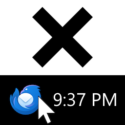

Close to Tray couldn't move your window to the tray because Thunderbird on Linux offers limited tray support.
Close to Tray only works if one of the following options is available in settings:
Neither of these options is available on Linux, so Close to Tray can't interact with the tray.
You are using a Betterbird-enabled version of Close to Tray with vanilla Thunderbird. You must download Betterbird.
Betterbird is a fork of Thunderbird that, among other features, adds tray support for Linux clients. Betterbird on Linux is confirmed to work with:
Close to Tray works with Betterbird 102.15.1 or newer.
This version of Betterbird is not supported. Please upgrade to Betterbird version 102.15.1 or newer.
Support for system tray on Linux was introduced in Betterbird 102.15.1. This is Betterbird .
Your desktop environment is not supported.
Close to Tray couldn't detect your desktop environment. This should not normally happen.
When moving a window to the tray, Betterbird checks your desktop environment against a list of supported environments. If your environment is not listed, the operation is aborted.
If you wish to override this check, add the value
no-DE
to the following setting: mail.minimizeToTray.supportedDesktops
Betterbird on Linux is confirmed to work with:
Warning: Overriding this check may cause your window to become hidden with no way to restore it.
Your Thunderbird client has native support for closing to tray. You no longer need an extension to do this.
Thunderbird now offers the following settings:
These settings have been updated to match your current Close to Tray preferences. It's now also possible to exit Thunderbird by right-clicking the tray icon and pressing "Exit".
This change was made possible by the author of Close to Tray with the help of the Thunderbird development team. Learn more